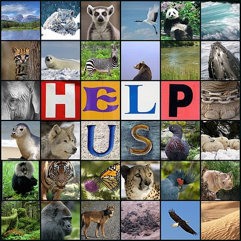

-Calentamiento Global-
El Calentamiento Global es un aumento de la temperatura de la atmósfera terrestre que se ha estado observando desde finales del siglo XIX. Se ha observado un aumento de aproximadamente 0.8 ºC desde que se realizan mediciones confiables, dos tercios de este aumento desde 1980. Hay una certeza del 90% (actualizada a 95% en el 2013) de que la causa del calentamiento es el aumento de gases de efecto invernadero que resultan de las actividades humanas como la quema de combustibles fósiles (carbón, gasolina, gas natural y petróleo) y la deforestación.
-Aumento del Nivel del Mar-
Las mediciones por satélite demuestran que a lo largo del siglo pasado, el Nivel Medio del Mar (GMSL, por sus siglas en inglés) aumentó entre 10 y 20 centímetros. Sin embargo, la tasa anual de aumento durante los últimos 20 años ha sido de 3,2 milímetros, más o menos el doble de la velocidad media de los 80 años precedentes.
Durante el siglo pasado, la quema de combustibles fósiles y otras actividades humanas y naturales liberaron en la atmósfera enormes cantidades de gases que atrapan el calor. Estas emisiones han provocado que la temperatura de la superficie de la Tierra haya aumentado y que los océanos hayan absorbido alrededor de un 80 por cierto de este calor adicional.
Cuando el nivel del mar se eleva con rapidez, tal y como ha estado haciéndolo en los últimos tiempos, incluso un pequeño aumento puede tener consecuencias devastadoras en los hábitats costeros. El agua de mar penetra en zonas cada vez más alejadas de la costa, lo cual puede generar consecuencias catastróficas como la erosión, las inundación de humedales, la contaminación de acuíferos y de suelo agrícola, y la pérdida del hábitat de peces, pájaros y plantas.
-Derretimiento de los Glaciares-
Dl derretimiento de los glaciares está provocando grandes cambios en las condiciones climáticas y biológicas de nuestro planeta, al aumentar los niveles de la superficies de agua y reducir las áreas habitables. Estudios recientes han determinado que tanto en la Antártida como en el Océano Ártico el derretimiento del hielo glaciar se ha acelerado y alcanza actualmente un ritmo sin precedentes.
De continuar el incremento de la velocidad de deshielo, el planeta perdería buena parte de su superficie habitable, generando varios conflictos, esto sumado a los cambios -que aún se investigan- en las condiciones de vida de todos los organismos del planeta, que alteran ecosistemas y la biósfera en general.
-Gran Número de Especies en Extinción-
En el mundo se pierden cientos de miles de especies, muchas de ellas aún antes de ser descubiertas por la ciencia. De ese modo, no sólo se pierde la variabilidad biológica, sino además la diversidad genética, fuente de sustento para las generaciones futuras. Una especie en peligro de extinción es la que puede extinguirse en un futuro próximo. A través de la historia de la evolución, millones de especies han desaparecido debido a procesos naturales. En los últimos 300 años, sin embargo, los humanos han multiplicado la tasa de extinción por mil.

La degradación del hábitat es actualmente la principal causa antropogénica de extinción de especies. La principal causa de la degradación del hábitat en todo el mundo es la agricultura, con la expansión urbana, la tala, la minería y algunas prácticas de pesca siguiendo en importancia como causas de extinción de especies.